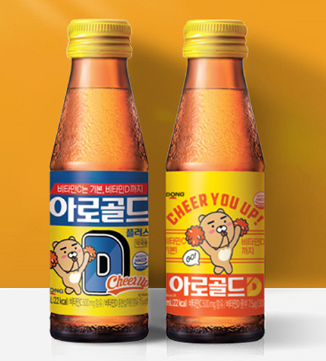

브랜드스토리
브랜드스토리
HOME > 브랜드스토리 > 아로골드D
아로골드DAroGold D
마시는 햇살 한 잔, 활력을 채우는 비타민D

- 햇빛 노출이 부족한 현대인들을 위해 설계된 맞춤형 비타민D 보충 음료
- 항산화 작용에 도움을 주는 비타민C 500mg이 풍부하게 함유
- 매일 가볍고 상큼하게 마시며 건강한 영양 밸런스를 챙길 수 있습니다.
- 무보존료·무색소 원칙으로 더욱 건강하고 안전하게 즐길 수 있는 아로골드D
효능/효과
이런 분들께 추천해요!
-
- 비타민D (햇살 충전)
- 햇빛을 통해 얻는 비타민D를 간편하게 채워주어 실내에만 있는 몸에 햇살 같은 에너지를 더해줘요.
-
- 뼈 튼튼 (칼슘 흡수)
- 장에서 칼슘이 쏙쏙 잘 흡수되도록 도와주어 뼈를 튼튼하게 지켜주는 역할을 해요.
-
- 비타민C (항산화·활력)
- 비타민C가 함께 들어있어 지친 일상에 상큼한 생기와 활력을 쑥쑥 채워줘요.
-
- 야외활동이 적은 수험생
-
종일 실내에 있어 부족해지기
쉬운 햇살 비타민D를 채워줘요.
-
- 피부미용에 관심이 많은 여성들
-
자외선 차단으로 부족한
비타민C로
상큼한 생기를 더해줘요.
-
- 뼈가 약해지신 부모님
-
칼슘 흡수를 도와주는 비타민D로
뼈 건강을 튼튼하게 지켜드려요.